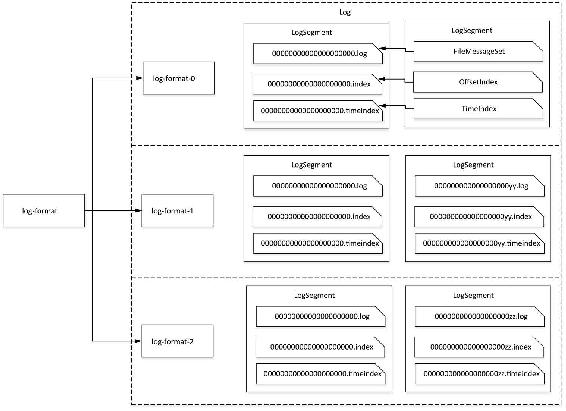
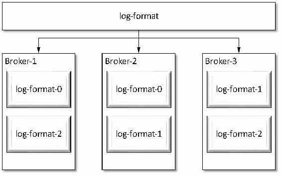
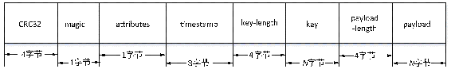
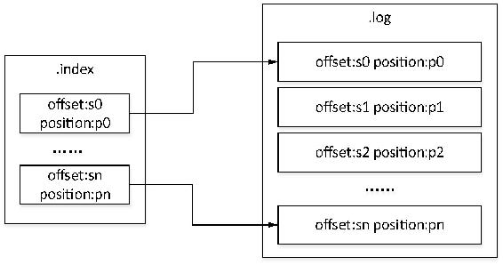
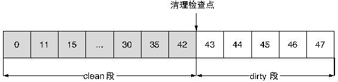
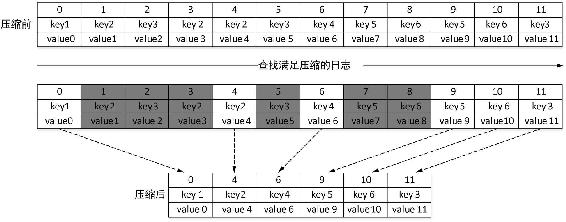

日志管理器（LogManager）是Kafka用来管理所有日志的，也称为日志管理子系统（Log Management Subsystem）。它负责管理日志的创建与删除、日志检索、日志加载和恢复、检查点及日志文件刷写磁盘以及日志清理等。本节将对日志管理器的部分功能进行详细讲解，在讲解日志管理器之前，首先介绍一下日志结构。
Kafka消息是以主题为基本单位进行组织的，各个主题之间相互独立。每个主题在逻辑结构上又由一个或多个分区构成，分区数可以在创建主题时指定，也可以在主题创建后再修改。可以通过Kafka自带的用于主题管理操作的脚本kafka-topics.sh来修改某个主题的分区数，但只能增加一个主题的分区数而不能减少其分区数。每个分区可以有一个或多个副本，从副本中会选出一个副本作为Leader，Leader负责与客户端进行读写操作，其他副本作为Follower。生产者将消息发送到Leader副本的代理节点，而Follower副本从Leader副本同步数据。
在存储结构上分区的每个副本在逻辑上对应一个Log对象，每个Log又划分为多个LogSegment，每个LogSegment包括一个日志文件和两个索引文件，其中两个索引文件分别为偏移量索引文件和时间戳索引文件。Log负责对LogSegment的管理，在Log对象中维护了一个ConcurrentSkipListMap，其底层是一个跳跃表，保存该主题所有分区对应的所有LogSegment。Kafka将日志文件封装为一个FileMessageSet对象，将两个索引文件封装为OffsetIndex和TimeIndex对象。Log和LogSegment都是逻辑上的概念，Log是对副本在代理上存储文件的逻辑抽象，LogSegmnent是对副本存储文件下每个日志片段的抽象，日志文件和索引文件才与磁盘上的物理存储相对应。假设有一个名为“log-format”的主题，该主题有3个分区，每个分区对应一个副本，则在存储结构中各对象映射关系如图3-19所示。

图3-19 Kafka日志存储结构中的映射关系
如图3-19所示，在存储结构上每个分区副本对应一个目录，每个分区副本由一个或多个日志段（LogSegment）组成。每个日志段在物理结构上对应一个以“.index”为文件名后缀的偏移量索引文件、一个以“.timeindex”为文件名后缀的时间戳索引文件以及一个以“.log”为文件名后缀的消息集文件（FileMessageSet），消息集文件即日志文件或数据文件。需要说明的是，时间戳索引文件是在0.10.1.1版本新增加的索引文件，在这之前的版本只有偏移量索引文件。数据文件的大小由配置项log.segment.bytes指定，默认为1 GB（1 073 741 824字节），同时Kafka提供了根据时间来切分日志段的机制，即若数据文件大小没有达到log.segment.bytes设置的阈值，但达到了log.roll.ms或是log.roll.hours设置的阈值，同样会创建新的日志段，在磁盘上创建一个数据文件和两个索引文件。接收消息追加（append）操作的日志段也称为活跃段（activeSegment）。
由图3-19也可以看出，分区所对应目录的命名规则为：主题名-分区编号，分区编号从0开始，顺序递增，分区编号最大值为分区总数减1，例如，对“log-format”主题，其分区目录依次为log-format-0、log-format-1和log-format-2。数据文件命名规则为：由数据文件的第一条消息偏移量，也称为基准偏移量（BaseOffset），左补0构成20位数字字符组成，每个分区第一个数据文件的基准偏移量为0，因此每个分区第一个数据文件对应的日志文件为0000000000000000000.log，两个索引文件分别为0000000000000000000.index和0000000000000000000.timeindex。后续每个数据文件的基准偏移量为上一个数据文件最后一条消息对应的偏移量（log end offset，LEO）值加1。
图3-19所示的示意图只是从逻辑上进行描述，为了更直观地认识Kafka存储结构，现在我们在一个有3个代理的Kafka集群上创建log-format主题做更进一步分析，这里我们指定该主题有3个分区、2个副本，同时为了讲解日志结构需要，我们将该主题数据文件大小为设置为1 KB，索引文件跨度为设置为100字节，这样便于演示日志分段（有可能部分读者习惯称之为日志切片）。
创建主题，命令如下：
kafka-topics.sh --create --zookeeper server-1:2181,server-2:2181,server-3:2181
--replication-factor 2 --partitions 3 --topic log-format修改段大小及索引跨度配置，命令如下：
kafka-topics.sh –zookeeper server-1:2181,server-2:2181,server-3:2181 --alter
--topic log-format --config segment.bytes=1024 --config index.interval.bytes=100分区副本在3台代理上的分布如图3-20所示。
登录ZooKeeper客户端查看分区及副本元数据信息如下：
get /brokers/topics/log-format输出信息如下：
{"version":1,"partitions":{"2":[3,1],"1":[2,3],"0":[1,2]}}在ZooKeeper中元数据信息以JSON串的格式存储，其中version表示版本标识，固定值为1，partitions之后的JSON字符串表示每个分区对应的ISR列表，格式为“"分区编号":AR”，多个分区信息满足JSON格式。例如，"2":[1,3]表示分区编号为2的分区其副本分布在brokerId为1和3的两个节点上，与图3-20描述一致。在AR信息中，第一个副本称为优先副本，通常情况下优先副本即为分区的Leader，若希望查看某个分区的副本Leader节点有以下两种方式。
（1）在ZooKeeper客户端查看分区状态信息。命令格式为：get /brokers/topics/<topicName>/ partitions/<partitionId>/state。例如，查看“log-format”编号为2的分区状态（state）元数据信息，执行命令如下：
get /brokers/topics/topic-format/partitions/2/state分区状态元数据信息输出如下：
{"controller_epoch":10,"leader":3,"version":1,"leader_epoch":0,"isr":[3,1]}其中分区状态信息表达式中，字段controller_epoch表示集群的控制器选举次数，初始值为0，当一个代理当选为控制器后，该字段值加1，每次控制器变更该字段值都增1。该字段值与/controller_epoch节点存储的控制器变化次数值一致；字段leader表示该分区的Leader副本所在代理的唯一编号brokerId；字段version表示版本编号，默认值为1；leader_epoch表示该分区Leader选举次数，初始值为0；isr即为同步副本的代理编号列表。

图3-20 主题log-format分区及副本分布
（2）通过Kafka自带的kafka-topics.sh脚本查看主题分区及副本分布信息。例如，查看log-format主题分区及状态分布信息，命令如下：
kafka-topics.sh --describe --zookeeper server-1:2181,server-2:2181,server-3:2181
--topic log-format该命令执行结果输出信息如下：
Topic:log-format PartitionCount:3 ReplicationFactor:2
Configs:index.interval.bytes=100,segment.bytes=1024
Topic: log-format Partition: 0 Leader: 1 Replicas: 1,2 Isr: 1,2
Topic: log-format Partition: 1 Leader: 2 Replicas: 2,3 Isr: 2,3
Topic: log-format Partition: 2 Leader: 3 Replicas: 3,1 Isr: 3,1该方式按序罗列出主题所有分区对应的副本及ISR列表信息，副本Leader节点及该主题被修改的配置信息。Leader指定该分区副本Leader，Replicas指定该分区副本所在代理的编号，Isr指定同步中的副本代理列表。
数据文件用来存储消息，每条消息由一个固定长度的消息头和一个可变长度（N字节）的净荷（payload）组成。同时若开启了消息Key，即设置parser.key=true，在发送消息时需要指定消息的Key，则每条消息数据包括一个可变长度的消息Key实体和消息实际数据payload，payload也称为消息体，这里强行将消息Key与消息payload分为两部分描述，是为了下文更清晰地介绍消息各部分内容的字节大小。在本书中，为了与消息的Key配合进行介绍，消息体也称为消息Value。消息Key可以为空，默认情况下消息的Key与消息体之间以制表符分隔。消息结构如图3-21所示。

图3-21 消息结构
消息结构各部分说明如表3-7所示。
表3-7 消息结构各字段说明
|
消 息 字 段 |
字 段 说 明 |
|---|---|
|
CRC32 |
CRC32校验和 |
|
magic |
Kafka服务程序协议版本号，用来作兼容，当前版本的Kafka该值为1 |
|
attributes |
该字段占1字节，其中低两位用来表示压缩方式，第三位表示时间戳类型，高4位为预留位置，暂无实际意义 |
|
timestamp |
消息时间戳，当magic值大于0时消息头必须包括该字段 |
|
key-length |
消息Key的长度 |
|
key |
消息Key实际数据 |
|
payload-length |
消息实际数据长度 |
|
payload |
消息实际数据 |
通过表3-7说明可知，由于当前版本Kafka的magic取值为1，因此消息头必须包括时间戳（timestamp）字段。当前版本的Kafka支持消息创建时间（CreateTime）及消息追加时间（LogAppendTime）两种时间戳类型，时间戳的类型由消息头中attributes字段的第三位指定，该位取值0表示创建时间，取值1表示消息追加时间。
在实际存储时一条消息总长度还包括12字节额外的开销（LogOverhead），这12字节包括两部分。其中一部分用8字节长度记录消息的偏移量，每条消息的偏移量是相对该分区下第一个数据文件的基准偏移量而言，它唯一确定一条消息在分区下的逻辑位置，同一个分区下的消息偏移量按序递增，若与数据库类比，消息偏移量即为消息的Id，即自增的主键。另外4字节表示消息总长度。因此当前版本Kafka一条消息的固定长度为34字节。
在数据文件中我们会看到相邻两条消息的position值之差减去34，即为上一条消息实际长度。若parser.key=true，则相邻两条消息position之差减去34为消息Key和消息体的总长度。
启动一个生产者向主题log-format中发送一批消息。执行以下命令将二进制分段日志文件转储为字符类型的文件。
kafka-run-class.sh kafka.tools.DumpLogSegments --files /opt/data/kafka-logs/log- format-0/00000000000000000000.log --print-data-log该数据文件部分内容如下：
Starting offset: 0
offset: 0 position: 0 CreateTime: 1487165556824 isvalid: true payloadsize: 1 magic: 1 compresscodec: NoCompressionCodec crc: 1269164006 payload: c
offset: 1 position: 35 CreateTime: 1487165689780 isvalid: true payloadsize: 1 magic: 1 compresscodec: NoCompressionCodec crc: 3541136778 payload: f可以看到，offset=1与offset=0的消息的position之差为35，用35减去1（payloadSize）即为消息固定长度34。通过转储后的消息内容，能够更直观地了解消息的存储结构。其中第一行标识该数据文件消息起始的偏移量，由于是第一个数据文件，因此起始偏移量为0，即第一条消息的偏移量为0。在转储后的文件中，Kafka用字段position表示该条消息在数据文件中的实际位置，每个数据文件第一条消息的position为0，之后每条消息的position为前一条消息的postion与消息固定长度、消息总长度之和。CreateTime表示该条消息时间类型为消息创建时间，isValid表示消息CRC校验是否合法。payloadSize表示消息体实际长度。Compresscodec表示消息压缩方式。crc表示消息的crc32校验和。payload表示消息体实际内容。
再通过以下命令启动一个生产者，开启生产消息时指定消息的Key：
kafka-console-producer.sh --broker-list server-1:9092,server-2:9092,server-3:9092 --topic log-format -property parse.key=true查看其中某个分区下的一个数据文件信息如下：
offset: 53 position: 723 CreateTime: 1487163989090 isvalid: true payloadsize: 1 magic: 1 compresscodec: NoCompressionCodec crc: 2783563669 keysize: 1 key: a payload: a
offset: 54 position: 759 CreateTime: 1487163998112 isvalid: true payloadsize: 1 magic: 1 compresscodec: NoCompressionCodec crc: 740192312 keysize: 1 key: b payload: boffset为53和54的两条消息，在展示格式上打印出了keysize和key两个字段，分别表示消息Key的长度和Key的实际内容。同样，position:759与position:723之差为offset:53这条消息的消息固定长度（34字节）与消息总长度（keySize与payloadSize之和）之和。
Kafka将消息分段保存在不同的文件中，同时每条消息都有唯一标识的偏移量，数据文件以该文件基准偏移量左补0命名，并将每个日志段以基准偏移量为Key保存到ConcurrentSkipListMap集合中。这样查找指定偏移量的消息时，用二分查找算法就能够快速定位到消息所在的段文件。为了进一步提高查找效率，Kafka为每个数据文件创建了一个基于偏移量的索引文件，该索引文件的文件名与数据文件相同，文件名后缀为.index，为了与另一个基于时间戳的索引区分开，我们在这里将基于偏移量的索引文件称为偏移量索引文件。
偏移量索引文件存储了若干个索引条目（IndexEntry），索引条目用来将逻辑偏移量映射成消息在数据文件中的物理位置，每个索引条目由offset和position组成，每个索引条目唯一确定数据文件中的一条消息。索引条目的offset表示与之对应的数据文件中某条消息的offset，position为与之对应的数据文件中某条消息的position，例如，数据文件中某条消息的offset和position分别为offset:8和position:0，若为该条消息创建了索引，索引文件中索引值为offset:8和position:0。并不是每条消息都对应有索引，而是采用了稀疏存储的方式，每隔一定字节的数据建立一条索引，我们可以通过index.interval.bytes设置索引跨度。
每次写消息到数据文件时会检查是否要向索引文件写入索引条目，创建一个新索引条目的条件为：距离前一次写索引后累计消息字节数大于${index.interval.bytes}。具体实现是LogSegment维持一个int类型的变量bytesSinceLastIndexEntry，初始值为0，每次写消息时先判断该值是否大于索引跨度。若小于索引跨度，则将该条消息的字节长度累加到变量bytesSinceLastIndexEntry中；否则会为该条消息创建一个索引条目写入索引文件，然后将bytesSinceLastIndexEntry重置为0。
索引文件与数据文件对应关系如图 3-22 所示，其中偏移量值用 sn 表示，消息实际位置position值用pn表示，n为数字，sn之间是顺序按步长1递增，而pn之间并不表示按步长1顺序递增之意，仅用来区分不同的position。

图3-22 索引文件与数据文件的映射关系
通过索引文件，我们就能够根据指定的偏移量快速地定位到消息物理位置。首先根据指定的偏移量，通过二分查找，查询出该偏移量对应消息所在的数据文件和索引文件，然后在索引文件中通过二分查找，查找值小于等于指定偏移量的最大偏移量，最后从查找出的最大偏移量处开始顺序扫描数据文件，直至在数据文件中查询到偏移量与指定偏移量相等的消息。
Kafka从0.10.1.1版本开始引入了一个基于时间戳的索引文件，即每个日志段在物理上还对应一个时间戳索引文件，该索引文件文件名和与之对应的数据文件文件名相同，但以.timeindex为文件名后缀，我们称之为时间戳索引文件。该索引文件包括一个8字节长度的时间戳字段和一个4字节的偏移量字段，其中时间戳记录的是该日志段目前为止最大时间戳，偏移量则记录的是插入新的索引条目时，当前消息的偏移量。该索引文件索引条目之间的跨度由配置项index.interval.bytes设置的阈值决定，但同时必须保证新创建的索引条目的时间戳大于上一个索引的时间戳。
时间戳索引文件中的时间戳对应的类型可以是消息创建时间（CreateTime），也可以是消息写入数据文件的时间（LogAppendTime）。时间戳索引文件中的时间戳类型与数据文件中的时间戳类型一致，索引条目对应的时间戳的值及偏移量与数据文件中相应消息的这两个字段的值相同。Kafka也提供了通过时间戳索引来访问消息的方法，在第6章6.3节有相关介绍。时间戳索引也采用了稀疏存储的方式，在记录偏移量索引条目时会判断是否需要同时写时间戳索引。
在对日志结构进行简要介绍之后，现在开始分析日志管理器的实现原理。首先分析日志管理器的启动过程。
当代理启动时首先实例化并启动一个日志管理器。实例化日志管理器时调用的构造方法如下：
class LogManager(val logDirs: Array[File], // 配置项log.dirs指定的消息存储目录
val topicConfigs: Map[String, LogConfig], // 主题级别的配置信息
val defaultConfig: LogConfig, // 默认配置信息
val cleanerConfig: CleanerConfig, // 日志压缩相关的配置信息
ioThreads: Int, // IO线程数
val flushCheckMs: Long, // 日志刷写到磁盘的时间间隔
val flushCheckpointMs: Long, // 日志检查点写磁盘的时间间隔
val retentionCheckMs: Long, // 日志清理的时间间隔
scheduler: Scheduler, // 后台定时任务组件
val brokerState: BrokerState, // Kafka代理的状态
private val time: Time)从日志管理器的构造方法可以看到，日志管理器依赖于日志管理相关的配置及Kafka后台定时任务调度组件（KafkaScheduler）。
下面介绍一下日志管理器初始化过程。
首先，根据代理启动时加载的配置文件server.properties里配置项log.dir配置的分区文件存储路径（可以配置多个路径，多路径之间以逗号分隔）检查相应目录是否已存在，若不存在就创建相应的目录。并在每个根目录下创建一个用于对该目录操作控制的锁文件，文件名为.lock，由于是以“.”开头的文件，因此这是一个隐藏文件，在Linux下需要通过ll-a或ls-a命令查看。同一时刻只能有一个日志管理器实例或线程来获取到该锁文件，该文件只有在日志管理器正常关闭，也就是KafkaServer正常关闭时才会被删除。通过该锁文件可以判断上次KafkaServer关闭是正常关闭还是异常关闭。同时创建或加载日志恢复检查点文件（recovery-point- offset-checkpoint），若该文件不存在，则创建一个新的检查点文件，该文件用来记录每个主题的每个分区下一次写入磁盘数据的偏移量，即小于该偏移量的数据已写入磁盘。例如，一个检查点文件如下：
0
4
log-format 1 0
log-format 2 0
kafka-action 1 1
kafka-action 2 0该文件中第一行0表示版本号信息，当前版本的Kafka此值固定为0，第二行4表示有4条记录，由于每个分区对应一行记录，因此4也表示该目录下总共有4个分区目录。从第三行开始每个分区对应一行记录，每行记录的信息为主题名、分区编号、已写磁盘的数据偏移量。
接着，根据检查点文件加载和恢复日志文件，该过程是调用日志管理器的loadLogs()方法来实现。该方法遍历${log.dir}配置的路径，对每个路径进行以下处理。
（1）创建用于日志恢复的线程池。为每个路径创建一组固定大小为${num.recovery.threads. per.data.dir }的线程池，默认大小为1，并将线程池保存到ArrayBuffer集合中。
（2）检测.kafka_cleanshutdown文件。当代理上一次是正常关闭时，则在${log.dir}配置的每个路径创建下面会有一个.kafka_cleanshutdown文件。若该文件不存在，那么表示上一次代理是由于发生故障而关闭，当然也有可能是KafkaServer首次启动，因此在启动时会设置一个中间状态RecoveringFromUncleanShutdown，Kafka统一认为本次的启动都是从非正常关闭中恢复的。
（3）构建Kafka日志恢复工作集。根据recovery-point-offset-checkpoint文件记录信息，加载并恢复分配到当前代理的所有分区，每个分区对应一个Log对象，该对象封装了对Kafka Log的基本操作。将分区的Log信息缓存在Pool[TopicAndPartition, Log]对象中，Pool是Kafka对ConcurrentHashMap集合进行的包装，其功能与ConcurrentHashMap类似，本书不做深入分析。
（4）将工作集提交到线程池执行。将执行结果保存到Map类型的jobs对象中。
通过以上4步操作之后，遍历jobs对象，等待线程执行完成，获取执行结果，然后删除.kafka_cleanshutdown文件，同时关闭用于恢复操作的线程池。至此，日志管理器完成了相关日志文件的恢复与加载。这里只是简要地梳理了日志恢复与加载的流程，在3.5.3节将更详细地介绍。
然后，若开启了日志定时清理功能，则实例化一个LogCleaner对象。该功能默认是开启的，可以通过配置项log.cleaner.enable进行设置。LogCleaner对象初始化时会创建${log.cleaner.threads}个清理线程，默认是创建一个清理线程。
最后，调用日志管理器的startup()方法启动日志管理器。在startup()方法中，若日志管理器初始时所依赖的后台定时任务调度组件不为空，则启动 3 个定时任务，分别为定期（log.retention. check.interval.ms）执行对过期日志的清理操作，定期（log.flush.scheduler.interval.ms）将日志刷到（flush）磁盘，定期（log.flush.offset.checkpoint.interval.ms）将分区已写磁盘的最大偏移量写入到检查点文件。同时，若开启了自动清理功能，则调用LogCleaner的startup()方法启动日志清理线程。
在日志管理器初始化时，会调用loadLogs()方法加载和恢复log.dir配置项指定目录下的分区文件，为每个分区文件创建一个Log对象。该方法实现逻辑如下。
首先，定义一个ArrayBuffer类型的threadPools变量，用来保存线程池对象。再定义一个Map类型的jobs变量，用来记录实例化Log对象的线程执行结果。
接着，遍历log.dir指定的每个目录，对每个目录执行以下处理。
（1）创建一个大小为${num.recovery.threads.per.data.dir}的线程池，用来初始化和加载Log对象，日志文件的恢复是由Log对象来完成的。
（2）检查是否存在.kafka_cleanshutdown文件，该文件在代理正常关闭的情况下会被创建。若不存在该文件，则将代理的状态设置为RecoveringFromUncleanShutdown，即表示代理启动过程有一个从上一次非正常关闭恢复数据的状态。
（3）将检查点文件解析成一个以TopicAndParttion对象为键、以偏移量作为值的Map集合（recoveryPoints）。
（4）为该目录下的每个分区目录（TopicName-PartitionId）创建一个初始化Log对象的任务，并将任务交由线程池处理。
（5）处理第4步任务执行结果，无异常时删除目录下面的.kafka_cleanshutdown文件。待所有任务处理完成后关闭线程池。
第4步中的每个任务的核心逻辑为：分别读取每个分区目录名，解析出分区对应的主题及分区编号，构造TopicAndPartition对象，从默认配置中提取该主题的配置信息，从检查点集合中取出该分区已写磁盘的最大偏移量，为每个分区目录实例化一个Log对象。Log对象实例化依赖于Kafka后台调度定时任务组件KafkaScheduler，Log对象通过该定时任务异步将日志刷到磁盘。将实例化的Log对象与TopicAndPartition对应关系保存到日志管理器维护的一个Pool[TopicAndPartition, Log]集合中，由Log对象完成日志恢复操作。
Log类在逻辑层面上可以理解为与分区对应，也就是说Log类封装了对一个分区的基本操作，从实现层面而言，也是对日志段（LogSegment）操作和管理的封装。在实例化Log对象时，Log会完成该分区目录下所有日志段的恢复操作，并将日志段加载到ConcurrentSkipListMap类型的segments集合中。ConcurrentSkipListMap具有跳跃表的功能，适用于高并发访问，多个线程可以安全地并发进行插入、删除、更新和访问操作，该集合的特性为通过偏移量快速查找日志提供了保证。
Log恢复和加载日志段由Log.loadSegments()方法实现，具体逻辑如下。
（1）检查分区目录是否存在，若不存在则创建。
（2）遍历分区目录下的文件，根据文件后缀名分别进行不同的处理。若文件后缀为.delete或.cleaned，则直接删除该文件。某个文件后缀名是.delete则表示该文件是需要被清除而还未执行删除操作，在删除一个日志段时首先会将该日志段对应的日志文件和两个索引文件的文件名后缀修改为.delete，然后调用LogSegment.delete()方法删除该日志段对应的文件。文件名为.cleaned的文件表示是在日志清理操作第一阶段生成的临时文件。因此这两种类型的文件，在对日志段进行恢复操作时均应直接删除。若文件名后缀为.swap，则先去掉.swap后缀，然后再判断文件是偏移量索引文件（.index）还是日志文件（.log）。若是偏移量索引文件则直接删除该文件，若是日志文件则删除该日志文件对应的索引文件，同时将该文件添加到Set<File>类型的swapFiles集合中。
（3）第二次遍历分区目录下的文件，依然根据文件后缀名分别进行处理。若是偏移量索引文件或时间戳索引文件（.timeindex），查找对应的日志文件是否则在，若日志文件不存在，则删除索引文件。若是日志文件，则创建一个LogSegment对象，如果该日志文件对应的偏移量索引文件存在，则检查两个索引文件是否有效，若索引文件无效则删除两个索引文件，同时调用LogSegment.recover()方法重新创建索引文件，若偏移量索引文件不存在则直接调用LogSegment.recover()方法创建索引文件。recover()方法的核心思想就是读取日志文件，当累积字节数大于${index.interval.bytes}时插入一条索引记录，完成索引的重建。
（4）遍历swapFiles集合对.swap类型的文件进行处理。根据.swap文件名计算出基准偏移量，然后分别创建LogSegment对象并重建两个索引文件，查找以该swap段的基准偏移量开始与下一个日志段基准偏移量之间所有日志段文件，删除这些日志段对应的数据文件及其索引，然后去掉.swap后缀，并将该日志段加到Log对象的segments集合中。
（5）若segments为空，则说明通过以上几步恢复操作没有得到任何有效的日志段，为了保证该Log对象至少有一个活跃段，需要创建一个日志段，即创建活跃段的数据文件及该日志段对应的两个索引文件。若segments不为空，则调用Log.recoverLog()方法恢复日志段。该方法首先也是检测.kafka_cleanshutdown文件是否存在，若存在则无需进行数据恢复处理，只需更新检查点；否则获取所有未刷新的日志段，即检查点之后的所有日志段，通过日志段LogSegment的recover()方法重建两个索引文件，在遍历日志段的数据文件消息时会进行CRC验证，若验证失败则将该条消息之后的所有消息删除掉，即该日志段从校验失败的位置开始截取，取该条消息之前有效的数据，同时该日志段之后的所有日志段也被删除。最后将活跃段的两个索引文件大小设置为${ segment.index.bytes }。
至此，日志加载及恢复操作介绍完毕。通过以上分析可知，日志管理器对日志的加载和恢复是调用Log和LogSegment相应的方法来执行的。
Kafka将一个主题的每个分区副本分成多个日志段文件，这样通过定时日志清理操作，将旧的日志文件及时清理并释放出空间，以避免磁盘上的日志段文件过大而导致新的日志无法写入。同时分成多个日志段文件而不是一个文件也便于清理操作。正因为分成了多个日志段文件，所以我们可以通过日志段的更新时间或是日志段的大小控制进行日志清理。
Kafka提供了日志删除（delete）和日志压缩（compact）两种清理日志的策略，通过参数cleanup.policy来指定日志清理的策略。日志清理粒度可以控制到主题级别，我们可以通过参数cleanup.policy为每个主题指定不同的清理策略。当然也可以在代理启动时通过配置项log.cleanup.policy指定日志清理策略，这样该代理上的所有分区日志清理默认使用该配置设置的策略，主题级别的策略设置会覆盖代理级别的配置。
在日志管理器启动时会启动一个后台定时任务线程用于定时删除日志段文件。该删除线程每隔${log.retention.check.interval.ms}毫秒检查一次是否该进行日志删除，默认是每5分钟执行一次。
Kafka提供了基于日志保留时长和日志段大小两种日志删除配置方式。基于日志保留时长的配置有log.retention.hours、log.retention.minutes和log.retention.ms，这3种时间配置项的单位依次为时、分、毫秒，表示日志段保留时长，我们可以选择其中一个配置项来设置日志段文件的保留时长。默认是设置log.retention.hours=168，即168小时，也就是说，日志段文件被保留7天之后会被清理。还有一种配置方式是通过配置项log.retention.bytes设置日志段大小。默认是不设置日志大小，即是以日志保留时长来进行日志删除操作，在实际业务中根据需要可以组合使用这两种配置方式。同样，若是主题级别的配置，则在相应的配置项前去掉“log.”前缀。
日志删除线程调用日志管理器的cleanupLogs()方法进行日志删除操作，该方法再调用Log.deleteOldSegments()方法查找并删除该待删除的日志段文件。该方法逻辑如代码清单 3-1所示。
代码清单3-1 Log.deleteOldSegments()方法的实现逻辑
def deleteOldSegments(): Int = {
// 保证清理策略是delete
if (!config.delete) return 0
// 查找基于保留时长及日志段大小的待删除的旧日志段文件
deleteRetenionMsBreachedSegments() + deleteRetentionSizeBreachedSegments()
}由代码清单3-1可知，删除时会通过Log.deleteRetenionMsBreachedSegments()方法查找保留时长超过预设值的待删除的日志段，以及通过Log.deleteRetentionSizeBreachedSegments()方法查找待删除的文件，以保证磁盘上的日志大小不超过${ retention.bytes }。若需要通过日志段大小来删除日志，需要保证${retention.bytes}的值大于0。
查找保留时长超时的日志段文件，并不是简单地依据日志段的最晚更新时间（lastModified）来计算，因为最晚更新时间并不能真实反映出该日志段在磁盘保留的时间，例如，在分区副本重分配时该日志段更新时间将会被修改。因此Kafka在计算日志段文件保留时长时会计算一个最长时间largestTimestamp，以此时间与当前时间的差值作为是否删除该日志段的条件。最长时间的计算先是查询该日志段文件对应的时间戳索引文件，查找时间戳索引文件中最后一条时间记录，若最后一条时间记录值大于0，则最长时间取该时间索引值，否则取该日志段的最晚更新时间。之所以基于时间戳索引进行日志清除，是因为时间戳索引是严格依据时间递增，且与日志写入操作相对应的，日志段文件只要不是日志写入的修改并不会影响时间戳索引文件中记录的时间。
在计算出最长时间后，从最早日志段文件依次扫描直到第一个不满足超时条件的段文件结束，查找出所有待删除的日志段文件。若待删除的日志段总数等于该分区日志段总数，说明所有日志段的保留时间均已过期，但该分区下至少要有一个日志段用于接受消息的写入，因此这种情况下，需要切分成一个新的日志段，此时调用Log.roll()方法，创建一个新的日志段文件。然后迭代待删除的日志段文件，调用Log.deleteSegment(segment: LogSegment)方法执行删除操作。该方法首先会从Log维护的跳跃链表中移除待删除的日志段，以保证没有线程对该日志段文件进行读操作，然后异步调用Log.asyncDeleteSegment()方法进行物理删除。在Log.asyncDeleteSegment()方法中其实是新启动了一个名为“delete-file”的定时任务线程进行删除。在删除开始时首先将日志段文件及其两个索引文件重命名为以“.deleted”为后缀的文件，然后调用FileMessageSet.delete()方法最终将日志段文件及其索引文件删除。
基于日志段大小的删除与基于日志保留时长的删除类似，首先计算日志段总大小（size）与${retention.bytes}之间的差值（diff），即需要删除的日志总大小，然后从第一个日志段开始查找，若diff与该日志段字节之差不小于0，则将该日志段加入到待删除集合中，以此类推，直到diff与查找的日志段大小之差小于0，查找结束。查找出待删除的日志段集合后，迭代待删除的日志段文件，物理删除处理逻辑与基于日志保留时间的删除方式相同，不再阐述。
另外一种日志清理的策略为日志压缩。这种策略是一种更细粒度的清理策略，它基于消息的Key，通过压缩每个Key对应的消息只保留最后一个版本的数据，该Key对应的其他版本在压缩时会被清除，类似数据库的更新操作。压缩策略将Key对应的值为空的消息，认为是直接删除该条消息。为了不影响日志追加操作，日志压缩并不会对活跃段进行操作。同时，对除活跃段之外日志段压缩也不是一次性执行，而是分批进行。若某个主题要开启日志压缩的策略，首先需要保证log.cleaner.enable=true，默认是开启。然后设置主题级别的日志清理策略配置项为“compact”。
日志管理器启动时会实例化一个LogCleaner对象，在该对象实例化时会创建一个LogCleanerManager对象，该对象负责日志压缩状态的管理，清理检查点文件（cleaner-offset-checkpoint）的更新及查找需要压缩的日志文件。
Kafka的日志压缩状态有3种，当Log开始进行压缩时压缩状态为LogCleaningInProgress，当压缩任务为暂停时就会进入LogCleaningPaused，当压缩被终止时就会转换为LogCleaningAborted状态。暂停和终止状态时不会进行日志压缩，需要等其他线程将其恢复为压缩状态，这几种压缩状态我们不展开分析。清理检查点文件与日志恢复检查点文件功能类似，记录每个主题的每个分区TopicAndPartition清理的偏移量。通过该文件，可以将数据文件分成两部分，一部分是已经过压缩操作的clean段，另一部分是未经过压缩操作的dirty段。其中经过压缩的clean段中的偏移量不是连续递增的，而dirty段的偏移量则是连续递增的。根据清理检查点将日志文件切分为clean和dirty两部分示意图如图3-23所示。

图3-23 Log由检查点切分为clean与dirty两部分
同时 LogCleaner 对象实例化时还创建了${log.cleaner.threads}个用于日志清理的线程CleanerThread，默认创建一个线程，CleanerThread是日志压缩的操作线程，该线程继承ShutdownableThread，实现了ShutdownableThread提供的抽象方法doWork()方法，doWork()方法是线程run()方法的真正执行体，是日志压缩操作的入口。在该方法中调用的是CleanerThread. cleanOrSleep()方法。下面详细分析cleanOrSleep()方法的执行逻辑。
（1）通过CleanerManager.grabFilthiestCompactedLog()方法查找满足压缩条件的Log，即可清理比例大于预设阈值并且Log没有处于LogCleaningInProgress状态。Kafka将该满足压缩条件的日志定义为LogToClean对象，该对象维护了每个Log的clean段字节数、第一个可清理的dirty段位置、第一个不可清理的消息位置以及可清理比例（cleanableRatio），还提供了清理比例比较的compare()方法。其中可清理比例是指dirty段的字节总数与日志段总字节数之比，只有当Log可清理比例不小于${ min.cleanable.dirty.ratio}时，即代理级别的配置log.cleaner.min.cleanable.ratio默认为0.5，才有可能成为被压缩的对象。
（2）通过Cleaner对象的clean()方法执行真正的压缩逻辑。Cleaner对象是一个对日志执行真正压缩操作逻辑的封装类。clean()方法从本次需要清理的日志起始位置与最大结束位置开始遍历，将每个消息的Key及该Key对应消息的偏移量保存到一个固定容量的SkimpyOffsetMap中，由于是Map，因此当Key相同时后面的值会覆盖先前的值，这样就保证了相同Key的消息只保留最晚的值。需要说明的是，这里的Key并不是消息实际的Key，而是Key进行MD5操作后的Hash值。最大结束位置显然是活跃段的起始位置，因为活跃段不参与日志压缩，而本次压缩操作真实的结束位置（endOffset）是取SkimpyOffsetMap的最大容量与最大结束位置两者中的小者。
（3）根据日志的最晚更新时间与${delete.retention.ms}计算需要删除的日志时间戳，记为deleteHorizonMs，日志段的最晚时间与该时间戳比较作为日志段是否保留的判断条件之一。
（4）将Log从0到endOffset的消息以LogSegment为单位进行分组，每组LogSegment字节大小不超过log.config.segmentSize，每组索引大小不能超过log.config.maxIndexSize。分组之后通过Cleaner.cleanSegments()方法进行压缩。该方法首先创建一个以“.cleaned”为后缀的数据文件及两个以“.cleaned”为后缀的索引文件。然后对组内的每个LogSegment调用Cleaner.cleanInto()方法执行真正的压缩。压缩操作的实质是将满足保留条件的消息复制到以“.cleaned”为后缀的数据文件中。消息是否可保留需要满足以下条件。
（5）对两个索引文件进行处理，去掉多余的索引项，同时将压缩后的日志段数据刷到磁盘。
（6）更新压缩后的日志段的最后修改时间，然后调用Log.replaceSegments()方法进行处理，将文件后缀由“.cleaned”修改为“.swap”，并将压缩后的日志段加入到segments集合中，然后将分组中的所有LogSegment从Log的segments集合中删除，并执行对这些日志段的删除操作。最后将“.swap”后缀去掉。
至此，日志压缩的整个过程介绍完毕。需要注意将日志清理与日志删除区分开，日志删除是删除整个日志段，而日志清理是将相同key的日志进行合并，只保留该key最后一个值，将合并后的数据构成新的日志段，同时删除原来的日志段。日志压缩过程示意图如图3-24所示。

图3-24 日志压缩过程